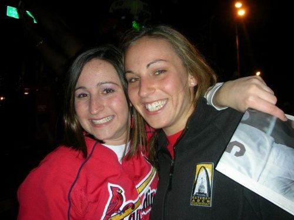
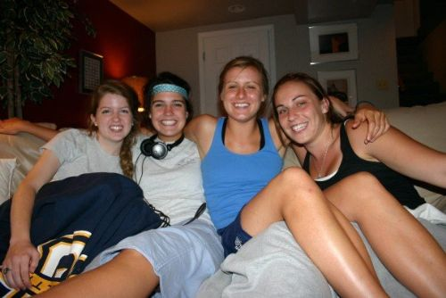
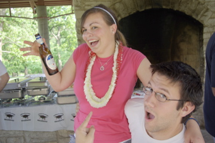

We are thrilled to be surrounded by those we love, and hopefully those that love us, on our special day. The following have taken the extra step by agreeing to not only stand with us, but rent tuxes, deal with Paige's Bride-zilla moments, and generally put up with us for the next year/ a lifetime. We are so grateful to them.
Paige's sister Erin Friedman will be the maid-of-honor. While this decision was partially determined by birth, Erin and Paige are also lucky to be close friends. If God hadn't planned this out so well, I think we would have made it work anyway.

The Bridesmaids include Maddie Fentress, Teresa Lodes, Beth Mueller, and Rachel Young. Maddie, Beth, Paige, and Teresa have been friends since high school. They have known Nate as long as Paige has and have been with us throughout our relationship...yes, we are as amazed as you are that they have stuck with us by so long!

Rachel is Nate's younger sister. She has taken some winning over, but we like to think she is as happy about this as we are. Rachel is the only person we know who can curb Paige's biting sarcasm, so for that alone, we love her.
Finally, on the girls side, we have two special young women that will be serving as ushers, liturgy attendants, and all around helpful women...we just don't trust the others to get it done. Paige's cousin Madeline Brestal and Nate's youngest sister Madeline Young are so special to Nate and Paige. Madeline Brestal and Paige were raised more like siblings than cousins...Paige can remember her as a baby and has trouble believing she is a high schooler. Madeline Young comes to visit Nate (and Paige by association) regularly, and her kindness and intelligence always makes them wish she could come around more often.
Nate's selection for "Best Man" was a well-thought over one. He wanted someone who really knew him, his relationship with Paige, and he wanted someone he knew would be around in the years to come. This past summer, as Paige left town regularly, his go-to golf buddy was Olivia Brestal, Paige's cousin. They share the same sense of humor (driving those around them crazy), a love for golf, and hang out at least once a week. Thus, the decision, while unconventional, was obvious. Nate's Best (Wo)man is Olivia Brestal.

Nate's groomsmen are the only three men he knows that are as nerdy as he is. He was blessed to find a job he loved in September of 2007 at Asynchrony Solutions. There, he has found a group of friends that share his love of computers, along with some semblence of social skills that allow them to function in the real world. He looks forward to them standing with him as he joins their ranks as a married man. Ben Lee, Brian Smith, and Eric Neunaber are his picks for groomsmen.
{% endblock %}